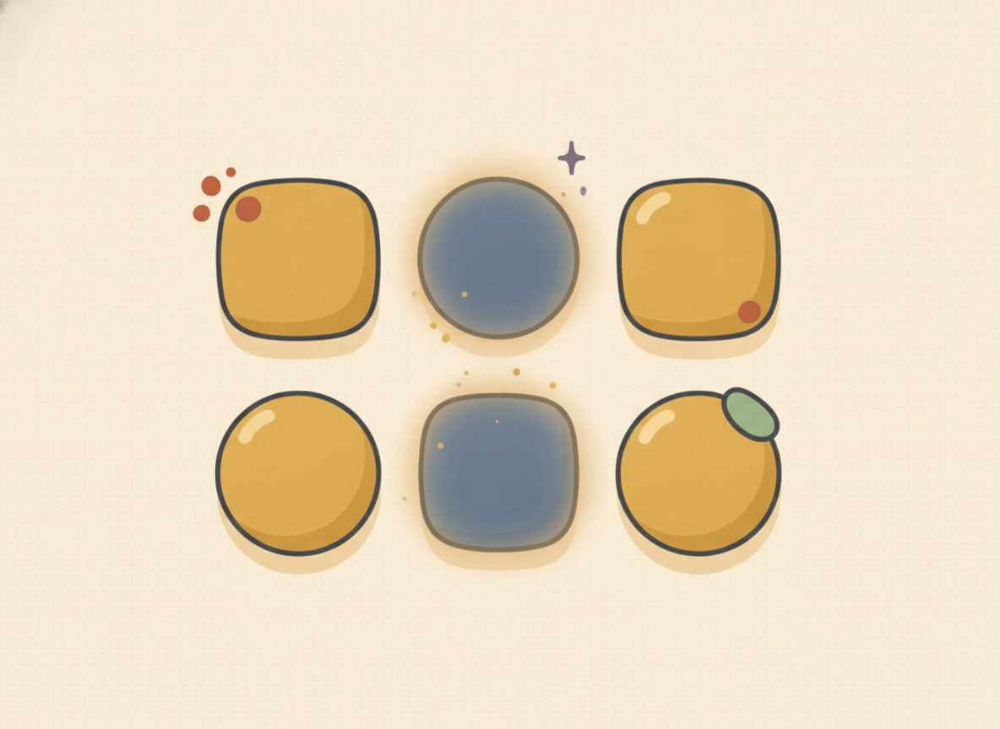

Elimination
Substitution shines when a variable is already alone. But plenty of systems come written like this, 3x + 2y = 16 and x + y = 6, with nothing isolated and no clean way to isolate it without dragging in fractions. For those, there's a method built to handle them head-on, and it's the workhorse you'll lean on most in later math.
The idea starts from the balance scale. Each equation is a level scale: the left side weighs exactly what the right side weighs. So if you have two true equations and you add their left sides together and their right sides together, the result is still balanced and still true. That's the move. You stack two equations and combine them, and if you've lined things up right, one variable disappears in the adding.

Picture x + y = 10 and x − y = 4. Stack them and add straight down. On the left, x + x is 2x, and then there's a +y and a −y. Those are a debt and an equal amount of cash sitting together: they go to zero and leave nothing behind. On the right, 10 + 4 is 14. So adding the two equations gives 2x = 14, one equation in one unknown. The y didn't get "cancelled" by some trick. The +y and the −y summed to zero because they were exact opposites.
That's the whole engine: combine the two equations so one variable's terms go to zero, solve what's left, then back-substitute for the partner and check both. The phrase to keep is "go to zero." It's literally what happens when +y and −y add.
When the matching terms have opposite signs, like +y and −y, you add to make them go to zero. When they have the same sign, like 2x in one equation and 2x in the other, you subtract one equation from the other so they go to zero. Add for opposites, subtract for matches.
And what if nothing lines up at all, with no pair of matching or opposite coefficients? Then you scale first: multiply an entire equation, both sides and every term, by a number that makes one pair line up. Multiplying a whole equation by a positive number is just resizing both pans of the scale by the same amount, so it stays level and the line it describes doesn't change. Once a pair matches or opposes, you're back to the add-or-subtract move.
New words
- 7.3.d1 Elimination (linear combination): combining two equations so that one variable's terms sum to zero ("go to zero"), removing it.
- 7.3.d2 Scaling an equation: multiplying an entire equation by a number. Because both sides are multiplied equally, the line, and the solution, is unchanged (the balance scale stays level when you resize both pans by the same amount).
Worked example
7.3.w1 Example 1, add to send a variable to zero. Solve x + y = 10 and x − y = 4. The y-terms are +y and −y, opposites, so add the two equations to send them to zero: $$\begin{aligned} &(x + y) + (x - y) = 10 + 4 \\ &\Rightarrow\; 2x = 14 \\ &\Rightarrow\; x = 7. \end{aligned}$$ Adding down the left: x + x is 2x, and +y plus −y is zero, so 2x is all that's left; on the right, 10 + 4 is 14. Divide by 2 to get x = 7. Now the partner: put x = 7 back into x + y = 10, giving 7 + y = 10, so y = 3. Solution (7, 3). Check both: is 7 + 3 = 10? Yes. Is 7 − 3 = 4? Yes. Solution: (7, 3).
7.3.w2 Example 2, subtract to send a variable to zero. Solve 2x + 3y = 12 and 2x − y = 4. Here the x-terms match: 2x in each, same sign. So subtract the second equation from the first to send the 2x to zero: $$\begin{aligned} &(2x + 3y) - (2x - y) = 12 - 4 \\ &\Rightarrow\; 4y = 8 \\ &\Rightarrow\; y = 2. \end{aligned}$$ Watch the subtraction carefully, because it's the place a sign goes missing. Subtracting the whole second equation flips the sign of every term in it: the 2x becomes −2x (so 2x − 2x is zero), and the −y becomes +y (so 3y + y is 4y). On the right, 12 − 4 is 8. So 4y = 8, and y = 2. Partner: put y = 2 into 2x − y = 4, giving 2x − 2 = 4, so 2x = 6 and x = 3. Solution (3, 2). Check both: is 2(3) + 3(2) = 12? Yes, since 6 + 6 = 12. Is 2(3) − 2 = 4? Yes. Solution: (3, 2).
That sign-flip on subtraction is the classic slip in this lesson. When you subtract the second equation, the −y inside it becomes +y, not −y. Every sign turns over. If you forget and leave it, you'd get 3y − y = 2y instead of 4y, and the answer comes out wrong. A good guard is the check at the end: if your pair doesn't satisfy both equations, a flipped sign in the subtraction is the first place to look.
7.3.w3 Example 3, subtract, coefficients already matched the other variable. Solve x + y = 7 and 2x + y = 11. The y-terms match (a +y in each), so subtract to send them to zero. Take the first from the second: (2x + y) − (x + y) = 11 − 7, which gives x = 4 (the y's go to zero, 2x − x is x, and 11 − 7 is 4). Partner: 4 + y = 7, so y = 3. Solution (4, 3). Check both: is 4 + 3 = 7? Yes. Is 2(4) + 3 = 11? Yes. Solution: (4, 3). (This is the same system you solved by substitution in 7.2. Same answer, a different road to it. When two methods both fit, the choice is yours; pick whichever looks cleaner for the system in front of you.)
7.3.w4 Example 4, scaling required. Solve 3x + 2y = 16 and x + y = 6. Nothing matches yet: 3x and x don't agree, and 2y and y don't agree. So scale first. Multiply the entire second equation by 2, both sides and every term, to make the y-coefficients match: 2(x + y) = 2(6) becomes 2x + 2y = 12. Now the y-terms are both +2y, so subtract this from the first equation: $$(3x + 2y) - (2x + 2y) = 16 - 12 \;\Rightarrow\; x = 4.$$ The +2y terms go to zero, 3x − 2x is x, and 16 − 12 is 4, so x = 4. Partner: put x = 4 into x + y = 6, giving y = 2. Solution (4, 2). Check both: is 3(4) + 2(2) = 16? Yes, since 12 + 4 = 16. Is 4 + 2 = 6? Yes. Solution: (4, 2).
When you scale, multiply every term and both sides. Doubling only the left side, or only the x-term, tips the scale and changes the equation. The way to keep it honest is to hand the multiplier to each piece, the same as distributing.
7.3.w5 Example 5, add, opposite y-coefficients. Solve 3x + 2y = 12 and 5x − 2y = 4. The y-terms are +2y and −2y, opposites already, no scaling needed. So add: $$\begin{aligned} &(3x + 2y) + (5x - 2y) = 12 + 4 \\ &\Rightarrow\; 8x = 16 \\ &\Rightarrow\; x = 2. \end{aligned}$$ Down the left: 3x + 5x is 8x, and +2y plus −2y goes to zero; on the right, 12 + 4 is 16. So 8x = 16 and x = 2. Partner: put x = 2 into 3x + 2y = 12, giving 6 + 2y = 12, so 2y = 6 and y = 3. Solution (2, 3). Check both: is 3(2) + 2(3) = 12? Yes, since 6 + 6 = 12. Is 5(2) − 2(3) = 4? Yes, since 10 − 6 = 4. Solution: (2, 3).
Check yourself
- 7.3.c1 "In 2x + 3y = 12 and 2x - y = 4, why subtract rather than add? What tells you which to do?" (The x-terms are both +2x, same sign, a match, so subtracting sends them to zero. If they'd been opposites, like +2x and −2x, you'd add instead. Same sign, subtract; opposite signs, add.)
- 7.3.c2 "Why is it legal to multiply x + y = 6 by 2? What stays true after you do?" (Because multiplying both sides equally keeps the scale balanced: 2(x + y) really does equal 2(6). The equation still describes the same line and the same solution; you've only rewritten it in a more useful size.)
- 7.3.c3 "Given 4x + 3y = 10 and 2x + y = 4, which equation would you scale and by what, to eliminate x? (Don't solve, just plan the move.)" (Scale the second equation by 2: 2(2x + y) = 2(4) gives 4x + 2y = 8. Now both equations have +4x, so subtracting sends x to zero.)
(solve by elimination; scale first where needed; give (x, y) and verify both)
Set A: add or subtract directly
Reveal answerHide to problem 1
(5, 3) — 5 + 3 = 8, 5 - 3 = 2Reveal answerHide to problem 2
(9, 3) — 9 + 3 = 12, 9 - 3 = 6Reveal answerHide to problem 3
(4, 1) — 2(4) + 1 = 9, 4 - 1 = 3Reveal answerHide to problem 4
(4, 2) — 3(4) + 2 = 14, 4 + 2 = 6Reveal answerHide to problem 5
(2, 3) — 2(2) + 3(3) = 13, 2(2) + 3 = 7Reveal answerHide to problem 6
(3, 4) — 3 + 2(4) = 11, 3 + 4 = 7Set B: scale first